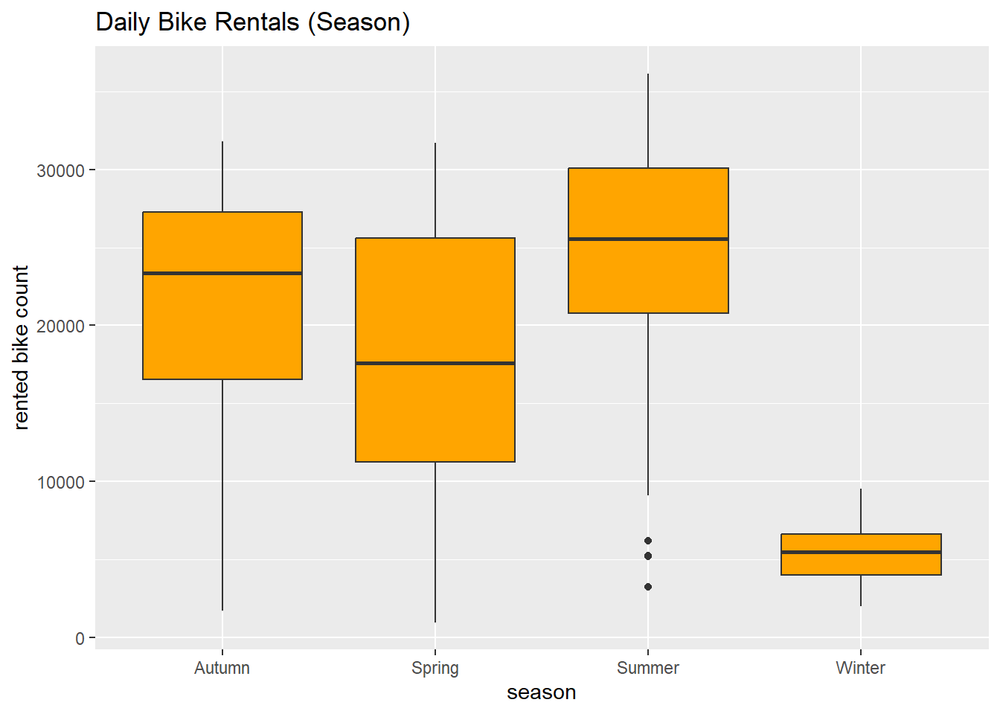
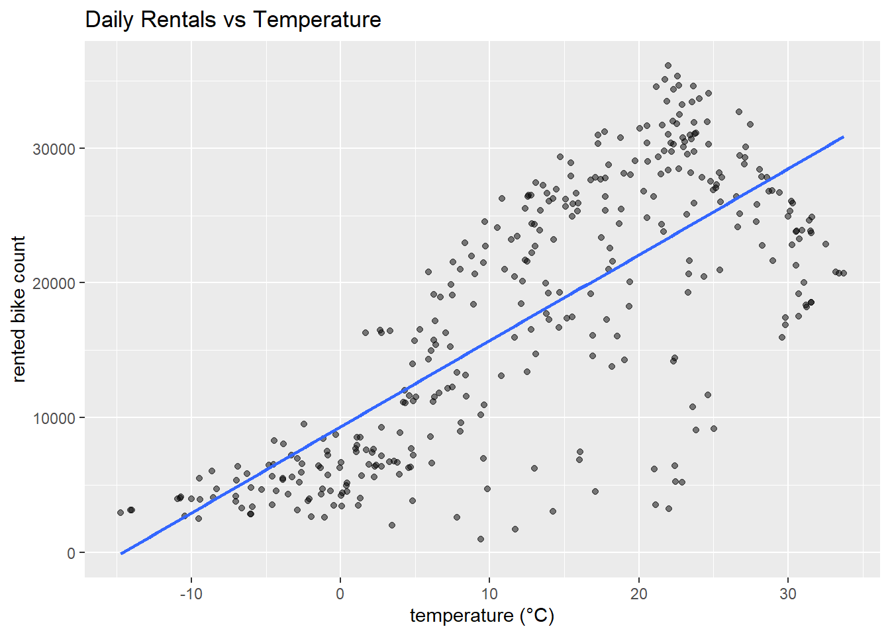

The goal of this data report is to perform exploratory data analysis (EDA), clean and transform the data, summarize it at a daily level, and then fit multiple linear regression (MLR) models with various complexities that simulate industry modeling.
Before we begin, lets import the required packages.
Warning: package 'tidyverse' was built under R version 4.2.3
Warning: package 'ggplot2' was built under R version 4.2.3
Warning: package 'tidyr' was built under R version 4.2.3
Warning: package 'readr' was built under R version 4.2.3
Warning: package 'stringr' was built under R version 4.2.3
Warning: package 'forcats' was built under R version 4.2.3
Warning: package 'lubridate' was built under R version 4.2.3
set.seed(42)
We begin by loading the Seoul Bike Sharing dataset directly from the NC State Statistics repository. We then want to ensure proper encoding to handle special characters (that typically come during data transfers and cloud sessions) andwhile also preventing data corruption. Column names are cleaned for consistency, and the Date variable is converted into a true date format using the lubricate function.
Finally, categorical variables such as Seasons, Holiday, and Functioning Day are converted into factors, preparing the data for analysis and modeling, and also demonstrating a transformation that could commonly occurs.
Analysis
read_csv_utf8_normalized <-function(url) {#get resp and raw bytes from source resp <- httr::GET(url)stop_for_status(resp) raw <- httr::content(resp, as ="raw")#take a guess on the encoding, using latin or utf-8 but it can be different enc_guess <-tryCatch( readr::guess_encoding(raw)$encoding[1],error =function(e) NULL )if (is.na(enc_guess) ||is.null(enc_guess)) enc_guess <-"UTF-8"#parse bytes and data using guessed encoding to see if we can read in df <- readr::read_csv(I(raw), locale = readr::locale(encoding = enc_guess), show_col_types =FALSE)#let's normalize char cols to UTF-8 ignoring the additional bytes df <- df %>%mutate(across(where(is.character), ~ stringi::stri_enc_toutf8(., is_unknown_8bit =TRUE))) df}data_url <-"https://www4.stat.ncsu.edu/~online/datasets/SeoulBikeData.csv"bikes_raw <-read_csv_utf8_normalized(data_url)
Next, we want to clean column names and ensure correct data types so we can use the data downstream with the model. This is one of the more important processes for modeling, as an incorrect column name or data type can complete render the model code useless, until the data is adjusted.
#normalize text encoding across char cols to convert to utf8 encodingbikes_raw <- bikes_raw %>% dplyr::mutate(across(where(is.character),~iconv(., from ="", to ="UTF-8", sub ="")))
Now we want to check for missing values and ensure that columns contain the expected data types that we want.
#need to call data set and clean prior as well, to ensure out summarizations workbikes <- bikes_raw %>% janitor::clean_names() %>%mutate(date = lubridate::dmy(date),seasons =as.factor(seasons),holiday =as.factor(holiday),functioning_day =as.factor(functioning_day) )bikes %>%summarize(across(everything(), ~sum(is.na(.)))) %>%pivot_longer(everything(), names_to ="column", values_to ="n_missing") %>%arrange(desc(n_missing))
To simplify the analysis, we want summarize the data to a daily level by season and holiday to reduce complexity and see if there are seasonal or holiday effects.
We sum bike counts and precipitation variables, and average weather conditions.
# A tibble: 8 × 5
seasons holiday days avg_bikes sd_bikes
<fct> <fct> <int> <dbl> <dbl>
1 Autumn Holiday 4 22754. 5642.
2 Autumn No Holiday 77 22065. 6792.
3 Spring Holiday 3 15247. 10917.
4 Spring No Holiday 87 18002. 8322.
5 Summer Holiday 2 24532. 8438.
6 Summer No Holiday 90 24824. 7324.
7 Winter Holiday 8 3759 1561.
8 Winter No Holiday 82 5574. 1757.
We then want to visualize key patterns across seasons and temperature.
#return a boxplot of rentals by seasonggplot(bikes_daily, aes(seasons, rented_bike_count)) +geom_boxplot(fill ="orange") +labs(title ="Daily Bike Rentals (Season)", x ="season", y ="rented bike count")

#scatter and trend on rentals v. tempggplot(bikes_daily, aes(temperature_c, rented_bike_count)) +geom_point(alpha =0.5) +geom_smooth(method ="lm", se =FALSE) +labs(title ="Daily Rentals vs Temperature", x ="temperature (°C)", y ="rented bike count")
`geom_smooth()` using formula = 'y ~ x'

We create a weekday/weekend factor from the date variable.
Finally, we inspect the most influential coefficients by their t-values.
#grab coeff table from final modelcoef_df <-summary(final_fit)$coefficients %>%as.data.frame() %>%rownames_to_column("term") %>%#sort by abs value on tarrange(desc(abs(`t value`)))#print head examplehead(coef_df, 20)
In conclusion, we were able to identify missing data and confirm data types while also aggregating to confirm to daily data summaries. We also were able to build and compare three separate but similar regression models with cross-validation. We found the best model, with the lowest RMSE given that is the most effective method in this case to identify best mode. We also were able to explore non-linear models in this case and understand more about data science.